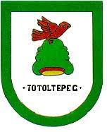

Toponimia
El glifo de la fundación de la población, proviene de las voces nahuas "totol", pájaro o ave, "tepetl", cerro, y "co", en; lo que significa "en el cerro de los pájaros"
Extensión
Tiene una superficie de 148.15 kilómetros cuadrados que lo ubican en el lugar número 81 con respecto de los demás municipios del estado.
Fiestas Populares
El segundo viernes de Cuaresma, fiesta patronal en honor de MarÃÂa Inmaculada y del Señor de la Salud, y festividad navideña el 25 de diciembre cuando se celebran fiestas en los cuatro barrios; el 24 de junio a San Juan, el 25 de julio a San Cristóbal, 13 de junio San Antonio y el 29 de septiembre a San Miguel; la Semana Santa es solemne.
Tradiciones
El 1 y 2 de noviembre se conmemora con ofrendas florales el dÃÂa de Todos Santos.